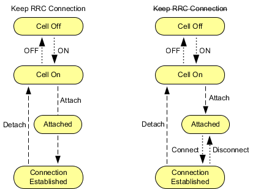

An NB-IoT connection is always a packet-switched connection. The main connection states are described in the following table. The states are displayed in the main view as "Packet Switched" (PS) state.
PS state | Description |
|---|---|
"(Cell) Off" | No downlink signal transmission |
"(Cell) On" | The R&S CMW emulates an NB-IoT cell, transmitting an NB-IoT signal to which the UE can synchronize. After synchronization, the UE can initiate an attach towards the instrument. |
"Attached" | Synchronization and attach have been performed. There is no radio resource control (RRC) connection (RRC state = idle). |
"Connection Established" | An RRC connection has been established (RRC state = connected). User data can be exchanged. The R&S CMW can vary connection parameters and perform transmitter or receiver tests. Note that short RRC idle periods are possible without a PS state change, for example, for redirection. |
State transitions can be initiated by the instrument or by the UE. The transitions between "Cell On" and "Connection Established" depend on whether the setting "Keep RRC Connection" is enabled, or not. The following figure provides an overview.

- "Signaling in Progress"
For example, displayed during the attach procedure. - "Connection in Progress"
Displayed during connection setup. - "Disconnect in Progress"
The list of transitions in Figure "PS state transitions with and without Keep RRC Connection" is not complete. The "Off" state can be reached from any state by turning off the cell signal. Moreover, incidents like a loss of the radio link cause additional transitions. |